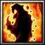

長宗我部元親幼年的時候，柔弱寡言，被家臣稱_"姬若子"，意即像女人的孩子。因此他直到二十二歲才第一次上戰場，甚至出征前才去向他人請教長槍的使用方 法——然而，一登上戰場，"姬若子"仿佛變了一個人似的，悍勇奮戰，當者披靡，他的外號從此變成了"鬼若子"。繼任家督後，元親到處征伐，先後滅亡本山、 安藝、一條、十河等勢力，這個被織田信長嘲笑"無鳥島之蝙蝠"的鄉下大名，竟然完全統一了四國地區。然而此時豐臣秀吉已經統一了日本中部，浩浩蕩蕩的大兵 團殺向四國，元親戰敗，被迫降伏。 敏捷型近戰英雄
法術 ：Ａ 輔助 ：Ｄ 最擅長一對多人 力量：25+2.10 敏捷：32+2.70（主要） 智慧：23+2.00 Ｗ[主動] 炎之加護 增加[25/35/45/55]%的攻擊速度與[5/10/15/20]%的移動速度， 受到攻擊時會釋出一道300範圍的火焰造成 敵人[50/80/110/170]點傷害。 持續20秒。
消 耗法力[120/140/160/180]，等待時間25秒。 Ｅ[主動] 鬼血之流動 讓自身的血液流動，快速的循環。恢復[100/200/300/400]點生命，然後每秒恢復[1/1.5/2/2.5]%生命值。持續16秒。 消 耗法力[100/120/140/160]，等待時間[40]秒。 
Ｒ[主動] 炎 之舞釋放出強烈 火焰攻擊敵人，造成480範圍敵人[150/250/350/450]點傷害並暈眩[0.5/1/1.5/2]秒。 消耗法力[160/180/200/220]，等待時間20秒。 Ｔ[主動] 鬼若子 化身為人如其名的鬼若子，獲得550距離混沌擴散攻擊， 增加基礎攻擊力[30/50/70]點與[600/900/1200]點額外生命值， 持續70秒。
消 耗法力[250/300/350]，等待時間150秒。 |